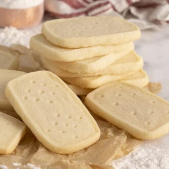

Shortbread Cookies

Traditional Scottish Treat
This simple and satisfying, melt in your mouth shortbread cookies recipe you'll quite likely find irresistible!
Ingredients
- Unsalted butter
- Confectioners' sugar
- Pure vanilla extract
- Flour
- Salt
Steps
- In a stand mixer fitted with a paddle attachment, beat butter and vanilla extract until creamed.
- Add confectioners sugar and salt; mix until combined.
- Scrape bowl down and add flour while beating on low. Scrape bowl once more and mix until combined.
- Shape the dough into a rectangular prism, wrap in plastic and chill until firm. At least an hour.
- Preheat oven to 350F (177C). Use a sharp knife to cut 1/2 inch thick slices
- Place slices, spaced at least an inch apart onto a baking sheet lined with a silicone mat or parchment paper.
- Use a fork or skewer to indent a pattern onto the top.
- Bake for about 10 minutes, rotating baking sheet in the oven halfway through.
- Transfer to a wire sheet to cool.
Link to original recipe